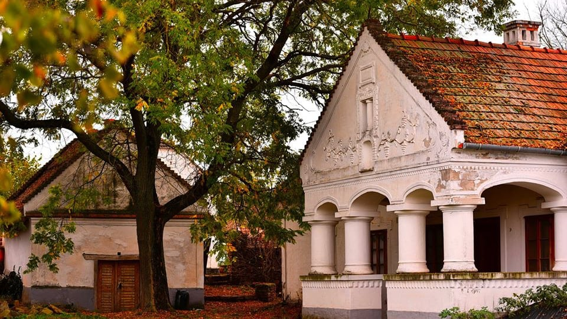

1. Természetjárás után vár az aquapark a föld alatt: Demjén
Észak-Magyarországon, Egertől nem messze található Demjén település, ahol nem csupán a természetjárók, hanem a wellness szerelmesei is kiélhetik magukat. Túrázásra a Remetelakot, a Kőhodályt ajánljuk, de a Hegyeskő tetőt megmászva elképesztő kilátásban lehet részetek a Termál Völgyre. Ha pedig itt tartunk, akkor ideje elmerülni a wellness élményekben is: mártózzatok meg a demjéni Termáltóban vagy a vízicsúszdákért látogassátok meg a Cascade Barlangfürdőt!

2. Fürdőváros a Hajdúságban: Hajdúszoboszló
Nem csak hazánk, hanem egész Európa legnagyobb fürdőkomplexumának számít a Hajdúszoboszlón található Hungarospa, mely gyógyvízzel, változó hőmérsékletű medencékkel, csónakázó tóval és aquaparkkal is várja a látogatókat. Ha sikerül elszakadni a vízi élményektől, akkor a Harangházat, a Fordított házat és a Fazekasházat is érdemes közelebbről megvizsgálni. A nosztalgiavonatra is megéri jegyet váltani, a város pedig igazi fesztivállá alakul a nyári éjszakákon. Fedezzétek fel!
3. A Balaton-felvidék gyöngyszeme: Kővágóörs
A Káli medence déli kapujában, a Balatontól mindössze pár kilométerre található Kővágóörs, mely egyszerre sarkall majd kirándulásra, ejtőzésre és kulináris kalandokra is. Fedezzétek fel a környék látnivalóit: túrázzatok a szentbékkállai kőtengernél, lépjetek be egy működő gazdaságba a salföldi major és állatsimogatóba és másszátok meg a Révfülöp fölé magasodó Fülöp-hegyet, melynek tetején a Millenniumi kilátó elképesztő panorámája vár majd rátok!
